图 31.1 濒危动物 西伯利亚虎面临严峻的灭绝危险。它的皮毛使其遭受灭顶之灾，同时栖息地也在迅速减少。为拯救西伯利亚虎，人们采用了许多方法，这些都将在本章予以讨论。
物种的迅速灭绝是生物圈所面临的最大的挑战之一（图 31.1）。白垩纪之前从未有过如此多的物种在如此短的时间内消失。面临这一挑战，保护生物学在10年前应运而生。保护生物学是一门新兴的应用学科，探索如何保护物种、群落，以及生态系统。它同时也研究引起物种数量减少的原因，并且尝试利用不同手段来避免物种消失。在本章中，我们首先探讨生物多样性的重要性及其面临的危机。然后，我们将关注一些濒临灭绝的物种，并通过几个典型例子来研究引起物种灭绝的五个关键因素。最后，我们将介绍人们在濒危物种的种群恢复中所做出的诸多努力。
物种灭亡是整个生命世界的一种现象，对于一个稳定的生态系统来说，它和物种形成一样正常和必要。绝大多数——甚至可能是所有的物种，最终都将走向灭绝。我们已知的物种中有99%以上（大多数来自化石记录）现在都已经灭绝。然而，目前物种灭绝的速率高得令人担忧。据估计，如果栖息地消失的速率一直持续目前的高水平（特别是在热带地区），那么30年内全球的生物多样性将丧失 20%！更为可悲的是，这些灭绝物种中的相当一部分我们从未留意过。科学家们估计全球只有 15% 的真核生物已经被发现并且命名，这一比例对于热带地区的物种而言很可能更低。
物种的灭绝不仅仅只发生在那些我们不太熟知的物种中。全球25万种植物中的5万种、2万种蝴蝶中的4000种，以及9000种鸟类中的2000种都可能在这一短暂的时间内消失。在地球45亿年的历史中，人类仅仅出现了50万年，而我们的祖先发展农业仅仅是在大约1万年前，而在这短暂的时间内，人类已经造成了难以计数的物种的灭绝，而且这一威胁仍然存在。这件事看似匪夷所思，可确实是活生生的事实。
通过研究自然史，特别是古人类对物种灭绝的影响，我们可以对当前发生的物种灭绝有更深刻的认识。在史前时期，智人 (Homo sapiens) 每到达一个新地区，都将引起严重的破坏。在最近一次冰川期的末期，也就是距今大约 12 000 年前，北美的动物群是由类似今天生活在非洲的大型哺乳动物组成的，其中包括猛犸象、乳齿象、马、骆驼、大地懒、剑齿虎和狮等（图 31.2）。在人类刚刚到达这里以后，74%~86% 的巨型动物（体重超过 45 kg 的动物）灭绝了。导致灭绝的直接原因是猎杀，另外同大面积烧毁丛林也有密切的关系。当然，也有一些科学家将这些物种的灭绝归因于气候的剧烈变化，但是这种假设并不能解释为什么在前几次冰川期的末期并没有发生物种的大规模灭绝，当然也不能说明为什么灭绝的主要是大型动物，而小型动物却没受到明显的影响。
无论人类到达地球的哪一个角落，类似的灭绝事件都会发生。4万年以前，大量不同种类的大型动物遍布澳大利亚，包括众多的有袋动物，它们在体形和生态习性上类似于现在的河马或美洲虎，7 m (9 英尺) 高的袋鼠和 6 m (20 英尺) 长的巨蜥随处可见——这些物种都在人类出现的同时消失了。岛屿也同样不能幸免。在马达加斯加岛，至少15种狐猴（其中一种体型与大猩猩相仿）迅速绝迹，还有像格米河马（一种小体形的河马）以及迄今为止所发现的最大鸟类——象鸟 (Aepyornis，身高超过 3 m，重达 450 kg)，都由于人类的出现而消失。新西兰，30 种鸟类灭绝，包括所有的 13 种恐鸟——另一种不能飞行的巨型鸟类。有趣的是，非洲并没有发生类似的巨型动物灭绝事件。科学家们认为，这是由于人类起源于非洲，生活于此的其他物种与人类协同进化了数百万年，最终对人类的捕杀形成了适应。
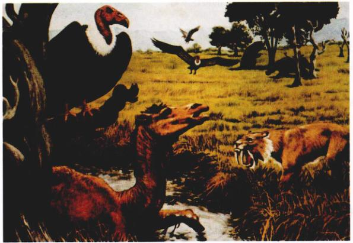图 31.2 人类定居前的北美 在人类移居北美之前，这里生活着鸟类和大量的哺乳动物，如古北美驼、剑齿虎、大地懒以及恐鹜等。
| 类别 | 大陆 | 岛屿 | 海洋 | 总计 | 该类生物的物种总数 | 灭绝种类所占的百分比 |
|---|---|---|---|---|---|---|
| 哺乳动物 | 30 | 51 | 4 | 85 | 4 000 | 2.1 |
| 鸟类 | 21 | 92 | 0 | 113 | 9 000 | 1.3 |
| 爬行动物 | 1 | 20 | 0 | 21 | 6 300 | 0.3 |
| 两栖动物* | 2 | 0 | 0 | 2 | 4 200 | 0.05 |
| 鱼类 | 22 | 1 | 0 | 23 | 19 100 | 0.1 |
| 无脊椎动物 | 49 | 48 | 1 | 98 | 1 000 000+ | 0.01 |
| 显花植物 | 245 | 139 | 0 | 384 | 250 000 | 0.2 |
* 最近两栖动物种群数量急剧下降，许多物种濒临灭绝。
有历史记载的灭绝物种中，最多的是鸟类和哺乳动物，这是因为这些物种比较醒目——体型较大并且容易研究。因此相比较而言，我们对其他物种灭绝速率的估计就要困难得多。表 31.1 中的数据取自最可靠的记录，它显示了从1600年至今有记录的物种灭绝状况。从表中可以看出，1600年至今，大约有85种哺乳动物和113种鸟类灭绝。大多数灭绝事件发生在最近的150年内。鸟类和哺乳动物的灭绝速率在 1600 - 1700 年间大约是每 10 年灭绝 1 个物种；但是从 1850 - 1950 年，灭绝速率增长到每年 1 个物种；而从 1986 - 1990 年，该速率是每年灭绝 4 个物种（图 31.3）！物种灭绝速率的增加是生物多样性危机的核心问题。
大多数有记载的物种灭绝发生在岛屿。例如，在过去500年内灭绝的90种哺乳动物中，73%生活在岛屿上（另外 19% 在澳大利亚）。岛屿物种之所以容易灭绝，是因为这些物种通常是在没有捕食者的环境中进化的，因此丧失了躲避人类和外来捕食者（比如鼠和猫）的能力。此外，人类也引入了竞争者和疾病（例如，鸟疟疾破坏了夏威夷群岛的鸟类区系）。最后，由于岛上物种的种群相对较小，因此也特别容易灭绝，这一点我们将在本章的后面详细讨论。
然而，在最近几年，物种灭绝的危机已经从岛屿转移到大陆上。目前大多数的濒危物种生活在大陆，正是这些大陆地区，在21世纪内将成为物种灭绝的主要地区。
也有人认为我们不必为灭绝事件担忧，因为灭绝是一种自然现象，大量的物种灭绝早在人类出现以前就已经发生过了。的确，正如我们在第21章中看到的，大规模的物种灭绝早在5亿年前就已经发生过了。但是，目前的大量灭绝事件在几个方面值得关注。首先，它是惟一一次由单一物种（人类）引起的。其次，虽然物种多样性通常在几百万年后会自动恢复，但是我们的后代将会在很长的一段时间中无法享受到生物多样性的益处和乐趣。再者，生物多样性此次能否恢复尚不确定。从前的大规模灭绝事件之后，旧物种的灭绝为新物种的进化提供了大量的可用资源；然而今天，这些资源可能无法再被利用，因为人类正在破坏性地并将其消耗这些资源据为己有。
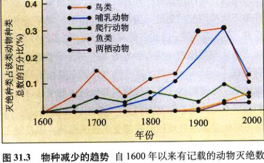图 31.3 物种减少的趋势 自 1600 年以来有记载的动物灭绝数据。其中大多数发生在岛屿上，鸟类与哺乳动物所受的影响最为显著（虽然这也反映了我们对其他门类动物的无知）。
在自然状态下，如果一个物种仅仅分布在一定的地理范围内，而在其他地区没有分布，我们就称它的分布为特有的或地方性的 (endemic)。一个特有种 (endemic species) 的生存范围可能非常大，例如黑樱桃树 (Prunus serotina) 位于北美洲所有的温带地区。更典型的是，特有种具有相对狭小的特定分布范围。例如，科莫多巨蜥只生活在印度尼西亚群岛的一些小岛之上，而夏威夷菊只生活在夏威夷岛的火山口附近。
相对隔离的地理区域，例如湖泊、山峰和大洋上的岛屿，特有种在所有物种中所占的百分率很高，也经常面临灭绝的危险。在美国，不同州的特有植物的物种数截然不同，有 379 种植物只生活在得克萨斯州而不出现在其他任何地区，而纽约只有一种特有植物。加利福尼亚州有许多不同类型的栖息地，包括沙漠、山地、海岸、原始森林、草原等类型，因此它拥有比其他州更多的特有种。
在世界范围内，特有种显著集中在若干“热点”特有分布 (endemism) 区。这些热点地区主要位于马达加斯加岛、热带雨林、喜玛拉雅东部和地中海气候区（加利福尼亚州、南非和澳大利亚）（图 31.4 和表 31.2）。然而不幸的是，这些地区正在遭受迅速的破坏，以及随之相伴的物种灭绝。在马达加斯加岛，据估计有 90% 的原始森林已经消失，而这个岛上 85% 的物种在世界其他地方没有分布。在巴西的大西洋沿岸，森林破坏的程度更加触目惊心，高达 95% 的原始森林已经消失。
| 地 区 | 哺乳动物 | 爬行动物 | 两栖动物 |
|---|---|---|---|
| 巴西大西洋沿岸 | 73 | 60 | 253 |
| 南美洲 Chocó 地区 | 60 | 63 | 210 |
| 菲律宾 | 111 | 159 | 65 |
| 加里曼丹北部 | 42 | 69 | 47 |
| 澳大利亚西南部 | 7 | 50 | 24 |
| 马达加斯加岛 | 84 | 301 | 187 |
| 好望角 (南非) | 9 | 19 | 19 |
| 加利福尼亚西部 | 30 | 16 | 17 |
| 新卡里多尼亚岛 | 6 | 56 | 0 |
| 中国中南部 | 75 | 16 | 51 |
资料来源：Myers et al., 2000。
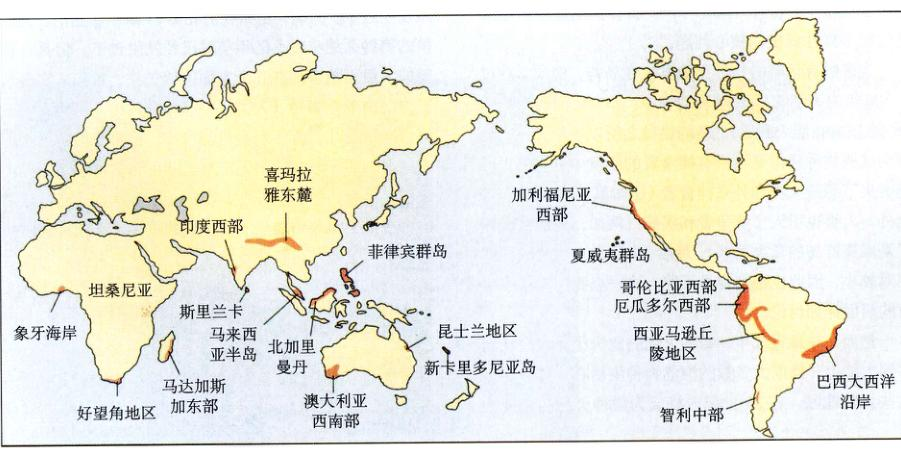图 31.4 特有种集中分布的“热点”地区 这些地区有很多特有种，它们都极易灭绝。
物种消失将会导致怎样的后果？生物多样性具有什么价值？它们的价值可以分为3个部分：①直接的经济价值——我们可以直接从植物、动物或其他物种中获得的经济利益；②间接的经济价值——由物种间接创造的经济价值；③伦理和美学价值。
许多物种都具有直接经济价值，可以用作食物、药物、纺织原料、能源以及建筑材料。比如说，人们将一小部分热带和半干旱地区的野生植物加以驯化，从而构成了如今主要的粮食来源。在将来，我们也能够从野生植物中寻找到可以改良品种或抵御病虫害的新基因。
目前大约 40% 药物的活性成分都从动植物中提取。阿斯匹林，世界上用途最广泛的药物，最初是从一种热带柳树——白柳 (Salix alba) 的叶中提取的。马达加斯加岛的一种蔷薇色长春花 (Catharanthus roseus)，能够产生抗白血病的有效成分（图 31.5）。
最近几十年内，生物学家们逐步完善了一项技术，可以使基因从一个生物体转移至另一个生物体。我们从以从其他物种中提取基因，为我所用，就象第19章中探讨的一样。基因勘探 (gene prospecting) 计划，即寻找有经济价值的动植物基因的计划已经启动。目前我们已经能够研究全世界生物中非常有潜力的部分，检测它们的基因是否具有经济价值。通过保护生物多样性，在未来我们将有可能不断地找到对我们有益的新基因。
生物群落的多样性对保持整个生态系统的健全至关重要。多样化的生物群落能够保持自然水质，缓冲洪水和干旱对生态系统的影响，还能够保护土壤，防止资源和营养物质的流失。另外，它还能改善当地气候，吸收污染物，以及促进有机物的分解和矿物质的循环。如果生物多样性被严重破坏，全球环境将在大范围内出现不稳定，这将导致生产力衰退、土地荒漠化、积水和矿化，以及其他许多我们不希望看到的结果。
虽然我们已经认识到保持物种多样性对维持生态系统健全的重要性，但是我们对生态系统和生物群落如何作用知之甚少。预测一个物种的消失会带来什么样的后果，以及这种后果的严重程度如何，这些问题我们似乎不大可能解决。这不妨做一个类比。在我们面前有一份波音客机的零件表，随机更改一个零件的号码会有什么样的结果呢？当然，你可能会把一个坐垫换成一卷卫生纸；但是，你同样有可能将一个支持机翼的关键部件变成了一支铅笔。关键在于，在承担了失败之前，你不应该去冒险。类似地，我们不知道某个物种的消失会对整个生态系统产生什么样的影响。破坏生物多样性无异于在拿生态系统的未来打赌。而对赌注，甚至整个赌局，我们几乎一无所知。
许多人认为保护生物多样性是一个伦理学问题，认为即使它们对人类没有直接的或者间接的经济价值，每一个物种都有其自身的生存权利。很明显，人类有利用和破坏其他物种的能力，但是在生态伦理面前，我们没有这样做权利。许多人认为能力和责任是不能割裂的，作为能够消灭其他物种的惟一物种，我们人类就有责任充当我们周围其他生命的守卫者。
面对一朵漂亮的花或一头高贵的大象，几乎没有人会否认生物多样性的美学价值，但是为什么我们会认为这种美感同样是有价值的呢？或许我们能做的只是在它永久地消失时，感受那一份失落的怅然。
图 31.5 蔷薇色的长春花 从马达加斯加的一种长春花 Catharanthus roseus 中可提取出两种药用成分——长春花碱和新长春花碱，它们均对治疗儿童的白血病有较好的疗效，将存活率从 20% 提高到 95% 以上。
生物学家如何估计某一特定物种是否容易灭绝？保护生物学家们通过研究该物种的种群大小及其栖息地的变化来解释这一问题。种群数量迅速收缩、栖息地遭受严重破坏（图 31.6）或者生活地域非常狭小的物种通常被认为是濒危物种。
定量地确定某一物种面临的危险并不是一项简单的工作。保护生物学家用“最小成活种群” (minimum viable population, MVP) 来粗略地估计某种群可能灭绝的危险程度。最小成活种群是指一个种群要维持或增加它的个体数量所必需的最少个体数或种群密度。
一些小的种群面临严峻的灭绝危险，而另外一些同样小的种群灭绝的危险性甚至没有。保护生物学家利用种群生存能力分析 (population viability analysis, PVA) 来估计在一段时间内（通常是 100 年），许多因素必须考虑进 PVA。其中两个特别重要的因素是：种群变动随机性（出生率和死亡率的随机变化）和种群遗传随机性（种群水平基因变异的波动）。种群变动随机性与影响种群规模的随机事件有关。种群规模越小，受到诸如传染病或环境干扰（如洪水或大火）等随机事件影响的可能性便越大，种群也就更容易灭绝。类似地，小的种群更容易由于遗传漂变（第 20 章）而损失变异，因此更容易产生短期或长期的基因多样性的丧失。由于这些原因，小的种群面临的灭绝危险越大。
许多物种呈间隔种群分布，即许多小种群各自占据一小块适宜的栖息地（第 24 章）。每一个亚种群可能非常小，面临着灭绝的危险；但是其他种群的个体可以重新迁入灭绝种群的栖息地。这种整个大种群可能非常安全，远没有灭绝的危险。这种救援效应是研究该物种 PVA 的一个重要内容。如果种群灭绝速率加快，将不会有足够的存活种群来补偿灭绝的亚种群，这样一来，整个物种将会逐步走向灭绝。
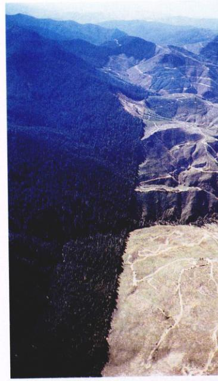图 31.6 栖息地的减少 在这次对华盛顿州国家森林的毁灭式砍伐中，几乎没有树木存活下来。同时，鹿、鸟类和其他动物在温带林中的栖息地也被破坏了。除非通过植树重新营造一块栖息地，否则，这片栖息地就真正“丧失”了。
当生态关系被严重扰乱时，物种通常就变得容易灭绝。栖息在阿拉斯加阿留申群岛附近冰冷海域的海獭，是海藻生态系统中的一个重要物种。但在最近几年，海獭的数量急剧下降。在 500 英里的海岸线上，海獭的数量由 20 世纪 70 年代的大约 53 000 只下降到约 6 000 只，减少了近 90%。海洋生态学家们通过对这一次灾难性事件的详尽研究，揭示出海洋种群间存在的致命多米诺效应。
最早引起海獭数量减少的事件似乎是大范围的商业捕鲸（参看本章末的历史资料）。失去了鲸类的控制，海洋浮游动物的数量剧增，导致以此为食的鳕鱼过度繁殖。在食物充足的情况下，鳕鱼变得比其他北太平洋鱼类如鲱鱼、鲈鱼等更具竞争力，因此，在 20 世纪 70 年代，这些鱼类的数量骤减。
现在，多米诺骨牌的倒塌开始加速。由于这些营养丰富的草食性鱼类数量迅速减少，以此为食的斯特勒海狮和斑海豹的种群数量随之减少。自从 20 世纪 70 年代以来，这些鳍足类的数量急剧下降。
鳍足类 (Pinnipeds) 是逆戟鲸（又称虎鲸）的主要食物。面临着食物短缺，一些逆戟鲸转向下一个美味——海獭。在一个窄而浅的海湾里，由于逆戟鲸无法进入，海獭数量只减少了 12%，而在一个类似的海湾，如果逆戟鲸能够够进入，一年之内三分之二的海獭便将消失。
没有了海獭的捕食，生态系统中海胆的数量开始膨胀；它们以海藻为食，不断地“乱砍滥伐”，严重破坏了海藻生态系统的生产（图 31.7）。结果，栖息在海藻生态系统中的鱼类，如杜父鱼、六线鱼等的数量也急剧减少。这种链状生态关系充分说明了海獭在整个海藻生态系统中的重要性。
通过研究已经灭绝的物种，以及对濒危动物运用种群生存能力分析，保护生物学家们已经注意到一些种类更加容易灭绝。
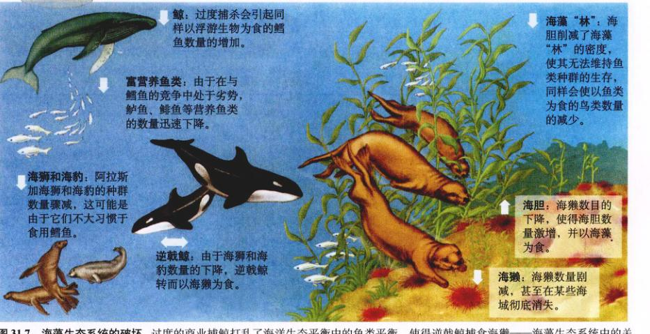图 31.7 海藻生态系统的破坏 过度的商业捕鲸打乱了海洋生态平衡中的鱼类平衡，使得逆戟鲸捕食海獭——海藻生态系统中的关键物种。
1. 鲸：过度捕杀会引起样以浮游生物为食的鳕鱼数量增加。
2. 富营养类鱼：由于在与鳕鱼的竞争中处于劣势，鲈鱼、鲱鱼等营养鱼类的数量迅速下降。
3. 海狮和海豹：阿拉斯加海狮和海豹的种群数量骤减，这可能是由于它们不大习惯于食用鳕鱼。
4. 逆戟鲸：由于海狮和海豹数量的下降，逆戟鲸转而以海獭为食。
5. 海獭：海獭数量剧减，甚至在某些海域彻底消失。
6. 海胆：海獭数目的下降，使得海胆数量激增，并以海藻为食。
7. 海藻“林”：海胆削减了海藻“林”的密度，使其无法维持鱼类种群的生存，同样会使以鱼类为食的鸟类数量减少。
局部的特有种只在某些特定的地理区域内生活，因此它们对栖息地的环境变化非常敏感。海岛上的鸟类常常由于人类对其栖息地的破坏而灭绝；许多仅生活在特定湖泊里的鱼类也遭受了同样的命运。
局部的特有种群数量较小，由于更容易受到种群变动和基因变异的影响，它们更容易灭绝。事实上，种群大小本身就是对物种灭绝危险程度的最好预报。
局部的特有种通常需要十分特殊的微环境。一旦栖息地发生改变，这样的适宜环境将不复存在。例如，生活在沼泽地的植物对水位有特殊的要求，只有在水位规律变化时才能能够生存，然而这一条件在人类活动的影响下会迅速消失。
种群规模不断缩小的物种通常濒临灭绝的危险，特别是在个体数量急剧下降的时候。虽然没有一定的规律，但是种群要不断地自我延续；因此，除非这种趋势被阻止或避免，否则种群数量的骤减意味着物种的濒危。达尔文在《物种起源》中明确阐述了这一观点：
“人们对物种的稀有丝毫感觉不奇怪，而对物种的消失却感到惊诧，而物种通常在灭绝前先是变得稀有，这就像是疾病是死亡的征兆，我们对疾病见怪不怪，但一但病人死了，就大感惊奇，怀疑他的死亡同某种暴力行为有关。”
种群数量长期减少意味着这一物种在未来的几年内有灭绝的危险，但是如果种群数量突然减少，尤其是对于小的种群或者特有种的种群来说，灭绝的危险就更加严峻。正因为如此，在针对某一物种进行种群生存能力分析时，最好在一段相对较长的时间内搜集数据。
缺少基因变异的物种通常更加濒危，这是因为它们更难适应环境的突然变化。变异程度非常低的物种，在受到外来疾病、新捕食者，或者其他新环境的挑战时，就会变得非常脆弱。例如，一种印度的豹 (Acionyx jubatus) 几乎没有基因变异，人们认为这同此种印度的豹对疾病的抵抗能力有密切关系。对其他猫科动物几乎没有影响的疾病，足可以杀死一群印度豹。
历史上人类曾大量猎杀的物种目前极度濒危。过度的捕杀能够很快地减少一个物种的种群数量，尽管这个物种以前非常庞大。一个世纪以前，北美的天空曾飞满成群的鸽子；但人们视之为免费的美味，肆意猎杀，最终使其绝迹。美洲野牛过去曾悠闲穿梭越美洲中部平原，而现在，从过度捕杀中侥幸逃脱的兽群也发岌可危。
商业市场的存在，使得人们对一些物种过度捕杀。例如，国际皮毛交易使得南美鼠、小羊驼、海獭，以及许多野生猫科动物的数量骤减。对某些商业价值极高的树木的过度开发也是一个明显的例子。几乎所有生活在加勒比海岛屿上的西印度桃花心木 (Swietenia mahogani) 都遭到砍伐；黎巴嫩广阔的雪松林，曾一度遍布中东的高海拔地区，现在只在少部分树林幸免于难。
另一个生动的例子是北大西洋的商业性鱼类捕捞活动。20 世纪 80 年代，虽然鳕鱼的数量已经急剧下降，但捕鱼船队仍接连不断地在纽芬兰岛沿岸对其大量捕捞。到了 1992 年，鳕鱼种群的数量已经降到原来的 1% 以下。美国和加拿大政府由此禁止捕捞鳕鱼，但没有人知道它们的数量是否会恢复。大西洋金枪鱼在过去的 10 年间种群数量减少了 90%，旗鱼则减少得更多。鱼类种群的破坏并没有使捕捞现象减少，反而刺激了人们对现有种群的更大规模的捕杀。
稀有物种并不一定就是濒危物种。栖息地资源的短缺可能限制了种群数量的增加。另外，肉食性动物的数量通常较少，这是因为它们处于高营养级之上，能够利用的有效能量并不多。即使是前面提到过的一些特有种，由于它们的种群相当稳定，也丝毫没有灭绝的危险。
除了种群的大小和自身缺陷，还有什么因素与灭绝有关？通过研究一系列的物种灭绝事件和许多目前濒危的物种，保护生物学家们找到了一些可能在物种灭绝中起着关键作用的因素：过度开发、外来物种入侵、生态关系的瓦解、遗传变异的缺失，以及栖息地的减少和片段化（图 31.8 和表 31.3）。
| 受下列因素影响而灭绝或濒危的物种百分比* | ||||||
|---|---|---|---|---|---|---|
| 动物类群 | 栖息地丧失 | 过度开发 | 外来物种入侵 | 捕食者 | 其他 | 未知 |
| 已灭绝 | ||||||
| 哺乳动物 | 19 | 23 | 20 | 1 | 1 | 36 |
| 鸟类 | 20 | 11 | 22 | 0 | 2 | 37 |
| 爬行动物 | 5 | 32 | 42 | 0 | 0 | 21 |
| 鱼类 | 35 | 4 | 30 | 0 | 4 | 48 |
| 濒临灭绝 | ||||||
| 哺乳动物 | 68 | 54 | 6 | 8 | 12 | - |
| 鸟类 | 58 | 30 | 28 | 1 | 1 | - |
| 爬行动物 | 53 | 63 | 17 | 3 | 6 | - |
| 两栖动物 | 77 | 29 | 14 | - | 3 | - |
| 鱼类 | 78 | 12 | 28 | - | 2 | - |
* 最近两栖动物种群数量急剧下降，许多物种濒临灭绝。
图 31.8 与物种灭绝有关的因素 这些数据显示了影响澳大利亚和美国哺乳动物灭绝的因素。
如图 31.8 和表 31.3 所示，栖息地减少是引起物种灭绝的最重要原因。从热带雨林到大洋深处，目前人类正在对各种类型的栖息地进行严重破坏。人类对自然栖息地的负面影响有以下 4 种形式：①彻底毁灭，②污染，③人为干扰，④栖息地片段化。
适合某一物种生存的栖息地被彻底毁坏的情况时有发生，如伐尽一片森林的所有树木，焚毁热带雨林进行放牧，以及毁坏栖息地以发展城市和工业等。迄今为止，森林的减少是导致栖息地破坏的一种普遍形式（图 31.9）。许多热带丛林现在正以每年 1% 的速度被砍伐或焚毁。
通常情况下，地域越大，它所包含的物种越丰富（见图 28.24）。正如我们在第30章中看到的，地域的面积和物种的数量间有一定的联系。虽然随着地理区域、生物类型以及地域类型（如海岛、山地）的不同而变化，但通常情况下，地域面积增加 10 倍，物种的数量约增加 1 倍。反过来，这一关系暗示了如果栖息地的面积减少了 90%，即只保留 10%，那么一半的物种将会消失。这一理论的证据来自对芬兰的“岛”（指某一特定类型的栖息地，它的周围被不适宜生存的环境所包围）上鸟类灭绝情况的研究。在这些岛上，人们发现物种的灭绝速率同岛的大小成反比（图 31.10）。
图 31.9 栖息地的破坏和物种灭绝 非洲东部马达加斯加的东海岸，曾一度被雨林所覆盖。后由于人口的增长而逐渐被破坏，90% 的原始森林已消失。许多物种已灭绝，还有不少处于濒危状况，其中包括马达加斯加特有的 16 种灵长类动物。
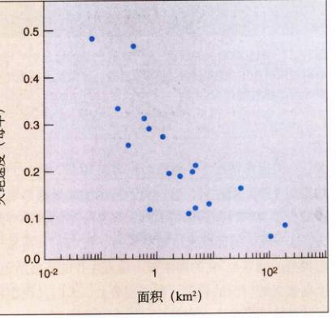图 31.10 物种灭绝与栖息地面积的关系 图中数据来自于芬兰一系列“栖息地岛”上鸟类的研究，显示了鸟类的灭绝速率与栖息地面积大小的关系。越小的岛屿，其物种灭绝的速率越快。
图 31.11 被割裂的森林栖息地 自从人类开始在威斯康星州的 Cadiz 镇定居以来，森林栖息地逐渐被割裂，从原来的几乎连续覆盖变为彼此分离的林块，最终降到不足原始面积的 1%。
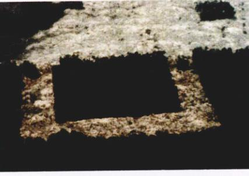图 31.12 栖息地割裂的研究 人们在砍伐的前后分别对巴西巴瑞斯的雨林中的生物多样性实施了监控，结果发现栖息地的割裂导致了物种的减少。
污染，例如酸雨和杀虫剂，将会导致栖息地退化，使得某些物种无法继续生存。水环境尤其容易受到污染。欧洲北部和北美洲北部的许多湖泊，在酸雨的作用下成为了“不毛之地”。
人类对栖息地的干扰使得一些物种无法继续生存。例如，阿拉巴马州和田纳西州的一些洞穴探险者，在 8 年中使蝙蝠数量急剧减少，有的甚至完全消失。当洞穴探险的频率低于每月一次时，蝙蝠数量的减少低于 20%；但是当频率超过每月 4 次时，这一比例高达 86% ~ 90%。
物种栖息地的丧失通常不仅导致种群数量的减少，而且使种群片段化成为不连续碎片（图 31.11）。
栖息地片段化的方式可能相当简单，如在森林中修一条路或者盖一间房子；但是这样的后果可能是灾难性的，因为它将原有种群分割为一系列的小种群。虽然有详细的数据对此加以说明，但是发生在温带地区的野生栖息地的片段化现象是毋庸置疑的。
由于栖息地变得支离破碎，并且面积缩小，因此处于边界的栖息地所占的比例大大增加了。边界效应 (edge effects) 会极大改变一个种群的生存机会。边界附近微气候（温度、风、湿度等）的变化，比简单的物理分割更能减少适宜物种生存的栖息地。在一项研究中，科学家们将雨林中的一片栖息地隔离开来，使边缘上的树暴露在阳光直射下。结果，这里比森林内部明凉、潮湿的环境更为炎热干燥，在森林 100 m 的边界范围内，生物量在 17 年内减少了 36%。
增加栖息地的边界同样增加了物种与捕食者及寄生虫相接触的机会，尤其是对于处于边界上的个体。随着栖息地面积的减小，远离边界的栖息地面积也随之减小、结果越来越多的栖息地处于捕食者的有效范围之内。栖息地的片段化被认为同大范围内的物种灭绝有直接的关系。
栖息地片段化的影响可以通过在巴西玛瑙斯所做的一项研究清楚地看到。由于雨林被不断砍伐，土地所有者同意将雨林分割为不同大小的若干块，分别加以保护，并在砍伐之前，对其中的生物进行了调查。首先进行种群调查。砍伐之后，物种开始从孤立的栖息地碎片中消失（图 31.12）。首当其冲的是猴子，因为它需要广阔的地域才能生存；由于小块的栖息地中没有足够的蚂蚁来维持生存，以蚂蚁为食的鸟类也相继消失。
由于诸如猴子一类的物种需要较大的生存空间，也就是说如果我们要求保护高度的生物多样性，大面积的连续栖息地是绝对必要的。我们已经从过去的所作所为中得到了足够的教训，因此，我们必须对大面积的栖息地加以保护。惟有如此，生物多样性才能得以延续。
鲸是世界上最大的动物，目前已相当稀有。鲸鱼数量的减少源于它们的商业价值。商业捕鲸始于 16 世纪，在 19 世纪和 20 世纪初达到顶峰。20 世纪初，通过加工石油而得到物美价廉的油类尚未形成市场，那时由鲸脂加工的油在世界市场上有着很高的商业价值。另外，须鲸的鲸须（用来过滤浮游生物的网状结构，像指甲一样，由角蛋白构成）被用来制作内衣。由于鲸鱼个体巨大，每捕获一头鲸鱼都能带来相当高的商业利润。
脊美鲸 (right whale) 最先遭受商业捕鲸的冲击。它们之所以被称为 right whale，是因为它们游得慢，容易捕获，能提供 150 桶鲸油脂和丰富的鲸须，使得它们成为商业捕鲸的“理想”对象。
18 世纪，脊美鲸的数量剧减，捕鲸者的目标转向了其他鲸类，如灰鲸、座头鲸（图 31.13）和弓头鲸。当这些鲸鱼的数量也减少后，捕鲸者的目标又转向鲸鱼中最大的蓝鲸，接下来又是脊鳍鲸一类的小型鲸鱼。鳁鲸、抹香鲸等也都不能逃脱此劫。当每一种鲸鱼都成为商业捕鲸的对象时，它们的数量不可避免地骤减（图 31.14）。
1935 年出台了相关的法律，规定捕杀脊美鲸属于违法行为。到那时为止，所有的 3 种脊美鲸都处于绝迹的边缘，它们的数量不足原来的 5%。尽管实行了保护政策，它们在北大西洋和北太平洋的数量都没有恢复。到 1946 年，另一些鲸鱼又处于濒危之列，捕鲸国家建立了国际捕鲸委员会 (IWC) 来控制商业捕鲸。就像黄鼠狼给鸡守屋一样，几十年里，IWC 在限制捕鲸方面几乎没有取得任何成效，鲸鱼数量一降再降。最后在 1974 年，在除了小须鲸以外其他所有鲸鱼的数量都减少的情况下，IWC 禁止了对蓝鲸、灰鲸、座头鲸的捕杀，还颁布了一些对其他鲸鱼捕杀的禁令。但是，经常有人违反这些规定，于是是在 1986 年，IWC 颁布了在全球范围内停止商业捕鲸的法规。虽然仍有一些商业捕鲸在科学研究的伪装下继续进行，但近 15 年内鲸鱼的年捕获量已迅速降低。
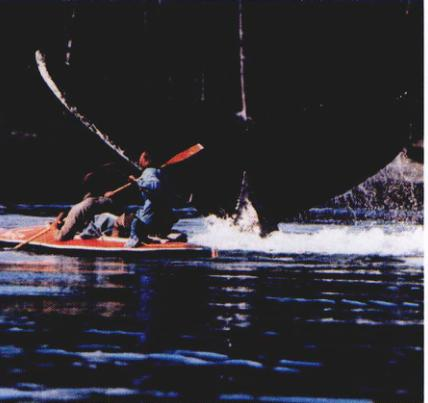图 31.13 座头鲸 现存座头鲸的数量只有 5000 ~ 10000 头，远低于人们所估计的 10 万头。
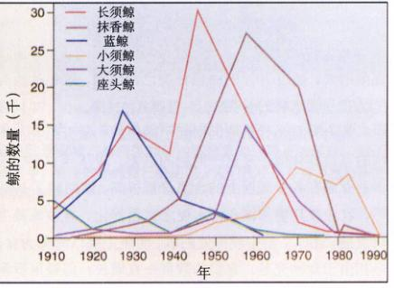图 31.14 商业捕鲸的历史 本图显示了 20 世纪的世界捕鲸量。每一种鲸的数量都降到继续捕杀它已经毫无利润为止。资料来源：UNEP，《环境资料报道》，1993—1994。
一些种类的鲸鱼数量正在恢复，但其他一些则没这么幸运。座头鲸的数量比 20 世纪 60 年代时增长了一倍多，每年增加约 10%；太平洋灰鲸已经从 1000 头恢复到原来的 20 000 头。而脊美鲸、座头鲸、脊鳍鲸和蓝鲸的数量还没有恢复，也没有人知道它们是否能恢复到原来的水平。
维多利亚湖是一个面积广阔的淡水湖，位于赤道上的中非，面积约与瑞士相当。1954 年前，有 300 多种丽鱼在此安家（图 31.15），这些杆状小鱼的长度从 5 cm (2 英寸) 到 25 cm (10 英寸) 不等，雄性有着各种炫丽的色彩。可是今天，所有的丽鱼或者濒危，或者已经灭绝。究竟是什么原因使得如此多各类的丽鱼突然间消失呢？
1954 年，乌干达政府引进了一种口味极大的尼罗河鲈 (Lates niloticus)，将它们养在维多利亚湖的近岸。这种河鲈体长超过 1.2 m (4 英尺)，成为了当地发展渔业的重要鱼类（图 31.16）。几十年过去了，河鲈似乎对其鱼类没有什么影响——在 30 年后的 1978 年，尼罗河鲈只占从湖中捕捞鱼量的不到 2%。
但是，不幸的事还是发生了。尼罗河鲈数量剧增并向湖中蔓延，它们大量地捕食丽鱼。到了 1986 年，从湖中捕获的鱼有 80% 都是尼罗河鲈；相比之下，丽鱼逐渐消失，超过 70% 的丽鱼种类已经绝迹，这包括所有生活在开阔水域的种类。
那么究竟是什么原因引起了丽鱼的大量灭绝呢？湖水的富营养化似乎是一个显而易见的答案。1978 年以前，维多利亚湖在各个深度上的含氧量都很高。然而到了 1989 年，农业废弃物和城市污水使之富营养化，导致藻类疯长腐烂，耗尽了湖中较深处的氧。丽鱼主要以藻类为食，最初由于食物充足，它们的数量一直增长；但是尼罗河鲈的引入使得丽鱼的生活无忧无忧。在食物（丽鱼）充足的情况下，尼罗河鲈的数量开始膨胀，由此一来，数量不断增加的尼罗河鲈几乎吃掉了所有的丽鱼种类。
自 1990 年以来，由南美洲引进的风眼莲 (Eichornia crassipes) 使得这一情况变得更为糟糕。由于湖水的富营养化，湖岸上丛生着茂盛的风眼莲，这严重破坏了生活在非开阔水域的丽鱼类的沿岸栖息地。
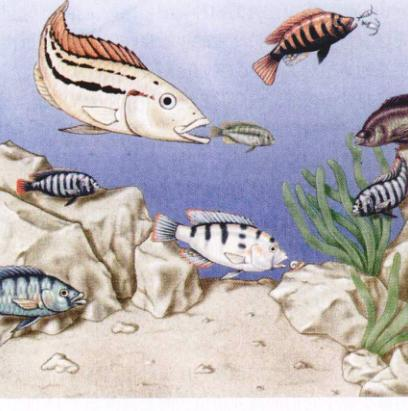图 31.15 维多利亚湖的丽鱼 丽鱼属于丽鱼科，它们彼此不同，占据着各自的生态位。有的种类捕食节肢动物，有的以植物为食，同时还有捕食鱼卵或鱼苗的种类。
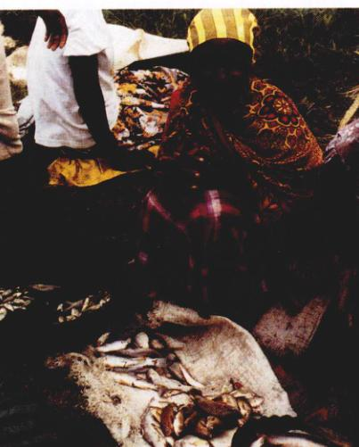图 31.16 胜利者和失败者 尼罗河鲈（上面的大鱼），一种商业鱼类被引入维多利亚湖，直接导致了上百种丽鱼（盆中的小鱼）的灭绝。
黑脚貂 (Mustela nigripes) 是一种迷人的北美鼬鼠，它们群居在地下迷宫中的草原土拨鼠为生。在过去的半个世纪中，农业的发展破坏了草原土拨鼠的栖息地，因此北美黑脚貂的数量急剧下降（图 31.17）。原来土拨鼠分布在面积超过 40 万 km² (1 亿英亩) 的大平原上，但现在仅仅只有 28 万 km² (70 万英亩) 的土地上保留它们足迹（表 31.4）。由于生态位的破坏，黑脚貂的数量也急剧下降，在 20 世纪后期叶已经变得相当稀有。20 世纪 70 年代末，当惟——小群已知的黑脚貂绝迹后，人们甚至以为它们永远地消失了。
1981 年，128 只黑脚貂在怀俄明州的 Meeteese 定居了。4 年里，它们的生活没有受到任何人为的干扰，但是黑脚貂的数量仍然减少了 50%，并且整个种群似乎处于灭绝的边缘。人们决定捕获一些个体进行人工繁殖，结果第一批捕获的黑脚貂死于狂犬病。人们怀疑种群数量的迅速下降可能与这种疾病有关。
看来这时候需要一些更为极端的做法。第二年，人们在黑脚貂全部灭绝前捕获了全部的 18 只个体，对它们进行人工繁殖。这一计划果然非常成功，到了 1991 年，种群数量上升到了 311 只。
在 1991 年，生物学家试图使它们回归大自然，在怀俄明州放归了 49 只黑脚貂。另外 159 只也在随后的两年内被放归。就在那一年出生了 6 窝小貂，看来放归是比较成功的。可是随后，放归的黑脚貂又急剧减少，到了 1998 年只有 10 只存活。这一问题的原因尚不完全清楚，似乎草原狼的捕食起到了重要的作用。现在人们通过猎杀草原狼来保护黑脚貂，这种方法对于保护日益减少的黑脚貂显得非常重要。但是黑脚貂仍然没有脱离灭绝的危险。
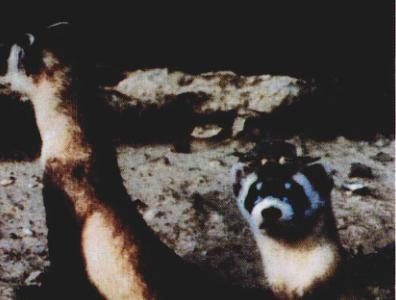图 31.17 小心翼翼的黑脚貂 黑脚貂以捕食草原土拨鼠为生。20 世纪，农业的发展造成了草原面积的减少，这使得草原土拨鼠的数量骤减，然而黑脚貂种群数量的下降更为迅速。到了 1986 年，野生的黑脚貂已经绝迹。人们现在正在努力重新恢复留的自然种群。
| 地 区 | 1899 - 1990 年 | 1998 年 |
|---|---|---|
| 亚利桑那州 | 未知 | 已灭绝 |
| 克罗拉多州 | 7 000 000 | 44 000 |
| 堪萨斯州 | 2 500 000 | 36 000 |
| 蒙大拿州 | 6 000 000 | 65 000 |
| 内布拉斯加州 | 6 000 000 | 60 000 |
| 新墨西哥州 | 12 000 000 | 15 000 |
| 北达科他州 | 2 000 000 | 20 400 |
| 俄克拉荷马州 | 950 000 | 9 500 |
| 南达科他州 | 1 757 000 | 244 500 |
| 得克萨斯州 | 56 833 000 | 22 650 |
| 怀俄明州 | 16 000 000 | 70 000-180 000 |
| 美国总计 | 111 000 000 | 700 000 |
猎物的减少使得黑脚貂的数量随之减少；而放归黑脚貂的策略至今还不知是否有效。
草原松鸡 (Tympanuchus cupido pinnatus) 体重可达 0.91 kg (2 磅)，因其华丽的羽毛而闻名（图 31.18），它们广泛分布于美国中西部地区。大量的草原松鸡曾一度遍布伊利诺斯州，但是在最近的 60 年内它们的数量骤减。伊利诺斯州在 1837 年引入钢犁，它可以将草原禾草深而密的根刨开，随后伊利诺斯州的草原被农田所替代；到 20 世纪初，草原已经完全消失了。1931 年，草原松鸡的一个亚种 Tympanuchus cupido cupido 已在该州消失。相比之下，草原松鸡的遭遇要好一些，它在该州数量先是跌到 1933 年的 25 000 只，之后又降到 1962 年的 2000 只。在周围各州，由于农业发展程度不是很高，因此草原松鸡的处境相对较好。
1962 年和 1967 年，人们为了保护草原松鸡，建立了两个禁猎区。但是草原仍不断地消失，草原上的松鸡同样难逃厄运。因此到了 20 世纪 80 年代，除了以上的两个保护区外，草原松鸡在伊利诺斯州绝迹了。松鸡的数量持续下降，到了 1990 年，卵的孵化率从来接近 100%，不可思议地下降到了 38%。到了 20 世纪 90 年代中期，每个保护区内雄性松鸡的数量仅仅为 6 只。
保护区中的松鸡种群到底发生了什么问题？一个比较有说服力的解释是：由于种群数量小，一个雄性松鸡将会和许多雌性交配，因此松鸡种群损失了许多遗传变异，导致了种群内部的许多严重问题。为了检验这种说法的正确性，伊利诺斯大学的生物学家们将 1974 - 1993 年间死去的松鸡的 DNA 和现在死去的松鸡相比比较，结果发现，松鸡种群虽然丢失了很多遗传多样性。通过提取 20 世纪 30 年代松鸡羽毛根部的 DNA，研究人员发现，当时伊利诺斯州的松鸡和现在其他州的松鸡没有什不同；然而，目前伊利诺斯州的松鸡已经在 20 世纪 70 年代时遗失了三分之一的遗传多样性。
现在，人们正在想办法阻止伊利诺斯州草原松鸡的灭绝。野生动物管理者将一些松鸡从明尼苏达州、堪萨斯州和内布拉斯加州加引入到伊利诺斯州。从 1992 年到 1996 年，总共有 518 只外州的松鸡同伊利诺斯州的本地松鸡交配。到了 1998 年，卵的孵化率迅速回升到 94%。伊利诺斯州的松鸡暂时躲过了灭绝的危险。
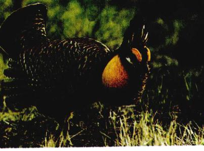图 31.18 正在求偶的雄性草原松鸡 草原松鸡鼓起头两侧明亮的橙色气囊，当用气囊吸气时，它会发出三声“布-布-布”的叫声，声音之大，几英里外部可以听见。
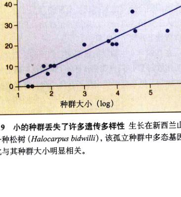图 31.19 小的种群丢失了许多遗传多样性 生长在新西兰山区中的一种松树 (Halocarpus bidwilli)，该孤立种群中多态基因的百分比与其种群大小明显相关。
自 1966 年以来，美国鱼类和野生动物部门每年都要组织成千上万的鸟类爱好者参加一项称为鸟类繁殖调查的活动。他们发现，在最近几年出现了一种令人震惊的趋势：长期在人类周围生活的知更鸟、八哥和山鸟在最近 30 年内的数量和分布范围都在不断增加，而森林鸣禽的数量却逐年降低。受到影响最大的是那些长途候鸟，如画眉、金莺、唐纳雀、歌绿鹃、颊白鸟和莺类等，这些鸟夏天在北部森林筑巢，到了冬天，它们会迁徙到南美、中美或加勒比群岛。
在美国东部的许多地区，近四分之三的新热带区候鸟数量骤减。例如，华盛顿的 Rock Creek 公园在近 20 年内损失了近 90% 的长途候鸟。自 20 世纪 70 年代以来，全美国的红尾鸲在短短几十年的时间里数量减少了 50%。得克萨斯斯和路易斯纳州的国家气象站，通过对雷达图像的研究指出，与 20 世纪 60 年代相比，目前只有大约一半的鸟类在每年春天飞越墨西哥湾。也就是说，在这几十年内，鸟类数量减少了近 5 亿！
引起鸟类数量下降的原因是栖息地的丧失和片段化。鸟类在美国和加拿大的夏季繁殖地被分割开，这对林地鸣禽产生许多了许多负面影响。它们中的许多种类适应了密林的坏境，每对鸟至少需要 100 km² (25 英亩) 的生存领域来繁殖后代。当密林被道路分割开时，鸣禽就越来越难找到足够的树林以修筑鸟巢。
第二个因素可能更为重要，那就是鸟类在中美和南美的越冬栖息地有限。如果鸟类生活在非带拥挤的地区，食物的供给可能会不足。对美国红尾鸲的研究清楚地表明，冬天有较好栖息地的鸟类，更容易在第二年春天回到它们的繁殖地。牙买加和洪都拉斯的红树林和湿地树林中 ¹³C 含量很低，这里是美国红尾鸲最佳的越冬环境，以这些植物为食的美国红尾鸲体内 ¹³C 的含量也会很低，在整个冬天，湿地树林中 65% 的鸟类体重不变或者增加。与此相反，在干燥灌木中的植被通常含有较高的 ¹³C，因此，以它们为食的美国红尾鸲体内 ¹³C 的含量就会比较高；而在灌木丛中越冬的鸟类体重平均减少 11%。达特茅斯学院的 Peter Marra 和 Richard Holmes 以及加拿大野生动物保护部门的 Keith Hobson 等人捕捉鸟类，采集血液样并测量它们体内 ¹³C 的含量。他们发现，在干燥灌木丛中过冬的鸟类，动身飞回北方繁殖地的时间较晚，并且繁殖后代的数目较少。从这项研究中可以清楚地看到 (图 31.20)：到达新罕布什尔州繁殖地的鸟类，其体内 ¹³C 的含量随着春天的慢慢过去而升高，在干燥灌木丛中越冬的鸟类最迟到来。因此，新热带地区红树林的丧失已经产生了严重的负面影响。随着最适栖息地的消失，越冬鸟的种群数量减少。不幸的是，加勒比群岛在 20 世纪 80 年代有 10% 的红树林已经消失，并且以每年 1% 的速度不断下降。作为栖息地的红树林数量的减少，燕雀变得“无家可归”。
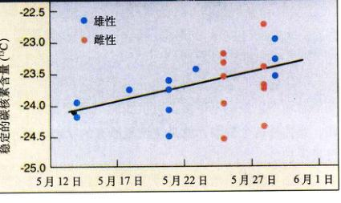图 31.20 美国红尾鸲是一种数量骤减的迁徙型鸣禽 到达夏季繁殖地的红尾鸲体内 ¹³C 的含量。早期到达的红尾鸲，繁殖的成功率最高，它们体内 ¹³C 含量较低，表明它们的冬天是在红树林栖息地中度过的。
一旦能够了解究竟是什么原因使得某一物种濒危，那么就有可能找出有效的方法使种群得到恢复。原因如果是过度的商业开发，那么可以通过政策控制，减少这一方面的影响；如果是栖息地丧失造成的，那么重建栖息地使数量恢复；如果是亚种的基因变异的遗
失，那么可以引入其他基因变异程度高的个体。此外，濒临灭绝的种群还可以通过捕获—人工繁殖—放归旧栖息地的方法使其得以恢复。
当然，所有这些解决花费都非常高。正如克林顿的行政秘书 Bruce Babbitt 所指出的那样，阻止环境问题的发生，要比环境遭到破坏后的修复更为经济。保护生态系统和对濒危物种进行监控，是保护环境和阻止物种灭绝的最有效手段。
保护生物学关注的是保护濒危物种，可是在许多情况下，我们要“保护”的对象已经被不可补救地破坏了。华盛顿州的温带森林已被砍伐殆尽，幸免于难的寥寥无几；大片的草原被开垦为麦田或是建为沥青停车场。这些栖息地中已经剩不下多少可供我们“保护”的物种。因此，要弥补这个缺陷，就必须恢复原有的状态，而不仅仅是保护。
根据导致栖息地丧失的原因，可以启动三项不同的栖息地重建计划。
(1) 原始重建：如果栖息地内所有物种已消失，人们应试着在该地区重新引入自然状态下的动植物。可是，如果要将废弃的农田恢复为草原 (图 31.21)，你知道应该种植些什么种吗？虽然按照原来的比例重建原有物种在理论上是可能的，但是重建一个生物群落需要了解每一个物种的特征，以及每一个物种的生态位，而我们很少会有这么丰富的信息，因此重建工作不必如此简单。
(2) 驱除外来物种：有时栖息地会被一外来物种所破坏。在这种情况下，重建栖息地就需要驱除外来物种。如果要重建维多利亚湖丽鱼种群，将不仅仅需要对濒危鱼种进行人工繁殖和储备，同时还需要解决湖泊的富营养问题，以及控制外来的水葫芦和尼罗河鲈的数量，或者干脆将它们完全驱除。有效地控制外来物种需要迅速发现并对其采取果断措施。攻击性很强的非洲蜂（即所谓的“杀人蜂”）不经意地被带到巴西，虽然在一个季度后人们即对其采取措施，但是为时已晚，现在，非洲蜂已经遍布西半球。
(3) 清除和复原：如果栖息地被化学物质严重污染，那么就应该在恢复前将污染物底清除。在第30章中，我们介绍对新英格兰纳什哇河的治理就相当成功，这是一个治理重度污染的很好的例子。
进行物种恢复，特别是针对一对一个物种而言，人们通常对自然种群采取直接干预，使其避免灭绝。我们已经讨论了捕获野生个体并进行人工繁殖的方法，现在这一方法正在用于保护雪貂和草原松鸡。另外还有一些意义重大的人工繁殖计划。
案例 1：游隼 美国的猛禽类游隼 (Falco peregrinus) 的数量在第二次世界大战以后的短短几年内急剧下
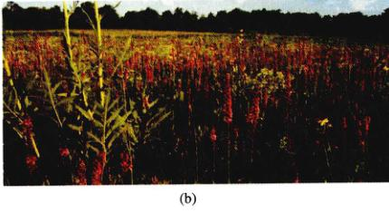图 31.21 威斯康星州麦迪逊植物园在恢复生态系统的工作中处于领先地位 (a) 1935 年 11 月，人们开始实施草原的恢复工作；(b) 被恢复草原的现状。这张照片与 1935 年的照片几乎是在同一地点拍摄的。
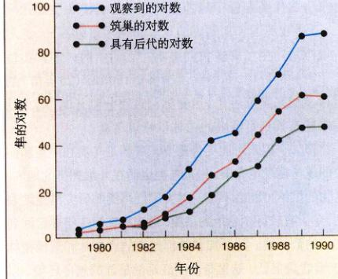图 31.22 人工繁殖 通过放归人工繁殖的游隼，10 年中美国东部的游隼数量已经得到恢复。
降。1942 年，密西西比河以东大约有 350 对；可是到了 1960 年，它们全部消失了。化学杀虫剂 DDT（二氯二苯三氯乙烷），以及相关的有机氯杀虫剂是这一事件的罪魁祸首。由于肉食性鸟类处于最高的营养级，DDT 通过食物链的富集作用大量地被它们吸收。由于 DDT 影响鸟卵中钙的沉积作用，致使多数卵在孵化以前就破碎了。
1972 年，联邦政府颁布法令，严禁使用 DDT，这样一来，DDT 在美国东部的使用迅速得以控制。然而，在这一以前，美国东部已经没有自然状态下的游隼了。为了恢复游隼种群，1970 年，康奈尔大学用其他地区的游隼进行人工繁殖，将其后代放归美国东部地区。到 1986 年底为止，已经有 850 多只游隼分别放归到 13 个州。这一结果十分令人欣慰（图 31.22）。
案例 2：加利福尼亚兀鹫 加利福尼亚兀鹫 (Gymnogyps californianus) 是一种大型鸟类，翼展可达 3m。在近 200 年里，它的数量急剧减少，到了 1985 年，兀鹫已处于灭绝的边缘。然而就在那一年，仅存的 15 只中又有 6 只死去。作为拯救加利福尼亚兀鹫的最后方法，人们捕获活的兀鹫，在动物园里对其进行人工繁殖。所有人工繁殖的对象包括 6 只野生的和 21 只笼养的鸟，最后将其后代放归在面积达 5300 公顷的草场中。这些兀鹫应尽可能地远离人类，并且保证亲缘较近的个体之间不发生交配。到 1999 年底，加利福尼亚兀鹫的数量已经超过了 110 只。经过训练能够躲开电线杆和人类之后，21 只兀鹫已经在亚利桑那北部山区成功放飞，所有放飞的大鸟看起来状况还不错。另外在大峡谷放飞的 20 只也适应了那里的环境。生物学家们正在期待着，希望这些加利福尼亚兀鹫能够在野生环境下繁殖并养育后代。
案例 3：黄石公园的狼 人工繁殖的目的不仅仅是保护濒危的物种，更重要的是使生态系统恢复到平衡状态。20 世纪初，由于灰狼 (Canis lupus) 数量的减少，黄石国家公园的生态系统出现了不平衡。失去了这些捕食者，鹿的数量迅速膨胀；它们破坏植被，最后致使食草动物由于缺乏食物而大批饿死。为了恢复公园的自然生态平衡，人们于 1995 年和 1996 年从加拿大引入两个狼群。狼群很适应这里的生活，繁殖也相当成功。到了 2001 年，公园里已经有了 16 群灰狼，总数达到 164 只。
黄石公园的生态平衡正在好转，鹿群的数量也没过去增长的那么快；但是公园附近的农场主对狼的归来感到不满，因为它们似乎对家畜群亦有所破坏。但实际情况是，这些狼常常杀死威胁牛群的草原狼和它们的幼崽，将其从一些地区赶走。在没有狼的情况下，草原狼位于食物链的顶端，因此狼群的引入实际上对农场主们更为有利。
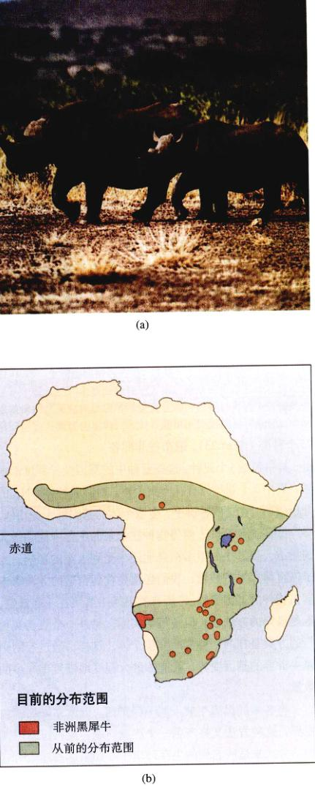图 31.23 保持遗传的多样性 黑犀牛 (a) 具有 75 个广泛分布的隔离种群，(b) 它们的处境相当危险。目前野生数量只有大约 2400 头。
物种恢复最主要的一个障碍是，在对其实施恢复以前，该物种就已经陷入困境。如果种群非常小，该物种的许多基因变异就会丢失（图 31.19）。这一点我们在前面草原松鸡和黑脚貂的例子中清楚地看到了。如果要成功地恢复一个种群，就需要保留和丰富物种遗传变异方面尽可能多地花费努力。
案例 4：黑犀牛 所有的 5 种犀牛都濒临危之列。其中 3 个亚洲种生活在正遭到迅速砍伐的森林中，其他两个非洲种由于犀牛角的原因而遭到大规模猎杀。目前所有的犀牛总数不到 11 000 头，而且现存的犀牛种群中，个体数量又非常之少，这样一来问题更难解决了。野生黑犀牛 (Diceros bicornis) 总共有 2400 头，大约有 75 个种群（图 31.23），遍布在非洲各处，其中包括 6 个亚种。这些亚种中的基因变异程度都很低；其中 3 个亚种只有几十个个体。对线粒体 DNA 的分析表明，在这些种群中，多数个体的基因都十分相似。
缺少遗传变异，使得物种在未来的生存面临极大的挑战。黑犀牛的很多栖息地还未受到人类的影响。为了恢复黑犀牛的数量，我们必须要找到合适的方法来丰富该物种的基因变异。将所有的黑犀牛聚集在一起繁殖，这是最好的方法了，但是不切实际。另外一个更切实可行的方案是在两个种群间交换个体。这样，通过控制黑犀牛种群的基因变异，就能够最大程度地恢复黑犀牛的数量。
将各地的黑犀牛放入同一保护区，以此来增加遗传变异，这种方法又将产生一个严重问题：亚种可能用不同的方式来适应它们的生存环境——如果这些适应对它们各自的后代至关重要的话，这样做将会产生何种后果呢？将黑犀牛的基因聚集起来，使其均一化，这样一来，很有可能破坏各个亚种的适应性（如果它们存在的话），因此代价会更为昂贵。
关键物种对生态系统的结构和功能有着相当强的影响。如图 31.7 中的海獭就是海藻生态系统的关键物种，它们的消失会带来灾难性的后果。判断关键物种并没有一定的法则，这只是一个定性的概念，关键物种通常对生物群落有着一定的影响。群落价值 (community importance) 即是这种影响的一个表征，它定量地反映了某个物种的丰度发生一个单位的变化时，生态系统某些参数的变化（包括物种丰度、生产力、营养循环）。
案例 5：狐蝠 狐蝠的例子充分说明了生态系统中关键物种的重要性，它们的减少可能会给其他物种带来重大的影响，有时甚至会引起物种的连锁灭绝（图 31.24）。蝙蝠家族将近 200 个种类，其中将近四分之一属于狐蝠属，遍布南太平洋各岛。它们同这些岛屿上的植物有着密切的关系，常常是花粉和种子的惟一传播者。在萨摩亚群岛的一项调查表明，落在地上的植物种子有 80% ~ 100% 被狐蝠传播到各处。许多植物还依靠狐蝠来授粉，一些植物甚至发生特化（如夜间开花），以防止其他传粉者取代狐蝠。
关岛的两种狐蝠都濒于灭绝，看来这对生态系统的影响不大，植物学家们发现一些植物不再结果，或是只结少量的果实且比正常的要小。由于果实无法散布到其他地方，新生幼苗拥挤在成熟的树中间，无法生长。
人类的捕杀是导致狐蝠灭绝的一个重要的原因。人们猎杀狐蝠作为食物，甚至仅仅为了娱乐。果农们认为它们是有害兽，也大量捕杀它们。狐蝠成百上千地生活在一起，特别容易受到攻击。它们的活动十分有规律，在
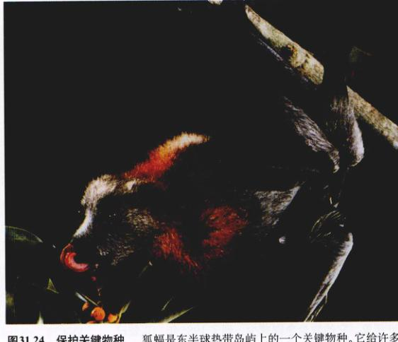图 31.24 保护关键物种 狐蝠是东半球热带岛屿上的一个关键物种，它给许多植物进行传粉，同时也是种子的散布者。过度捕杀和栖息地的破坏造成了狐蝠数量减少，这对许多南太平洋岛屿的生态系统造成了严重的破坏。
栖息地可以很轻松地捕获它们，通常猎人们一次就可以轻易捕获上千只狐蝠。
保护狐蝠的工作才刚刚开始。一个成功的例子是保护罗得里格斯岛（毛里求斯）上的狐蝠 (Pteropus rodricensis)，它们只生活在印度洋上靠近马达加斯加群岛的罗得里格斯岛。罗得里格斯狐蝠种群的数量由 1955 年的 1000 只下降到 1974 年的 100 只，这是由于农业的发展使得狐蝠的栖息地不断减小。自 1974 年起，政府立法保护狐蝠，岛上森林面积也通过一项植树工程而不断扩大。如今人工饲养的狐蝠群已用 11 个，并且数量还在迅速增加。将法律保护、恢复栖息地和人工繁殖相结合，能够对狐蝠起到十分有效的保护。
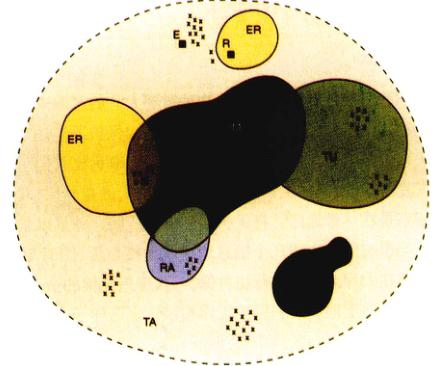图 31.25 生物圈保护区方案 这是一个既能保护生物圈，同时也不干扰人们利用资源的理想方案。重要的生态系统在核心区域被保护，研究和参观设施设置在缓冲区域，可再生资源的开发设施和人类居住地可以设置在缓冲周期的多用途区。
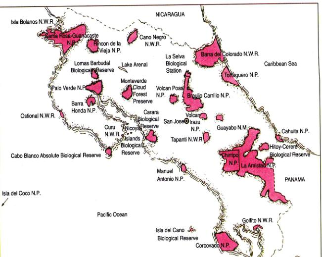图 31.26 哥斯达黎加的生态保护 哥斯达黎加已经将 12% 的国土面积建为国家公园，并设置了 8 个自然保护区。
栖息地碎片化是保护生物多样性中最难克服的困难。正如我们已经看到的，有些物种需要大片的区域来维持生存，如果没有法提供合适的生存环境，保护工作注定会失败。很明显，栖息地碎片中的物种减少速率远比人们所能恢复的要快。保护生物学家们呼吁建立大的自然保护区，特别是在热带地区。将保护区中面积广阔，并且从未受人类影响的地区作为核心区 (core) (图 31.25)。长期在大片土地上进行物种保护，其中最关键的一点是，要使当地土地利用和保护工作相互协调。这样一来，虽然在保护区的核心区禁止进行经济活动，但在保护区的其他地方可以进行非破坏性的资源利用。将保护区和规划用地联系起来，无疑增加了栖息地的面积，同时使栖息地碎片化问题得以解决。作为这一理论成果的实践者，哥斯达黎加率先建立了 8 个自然保护区（图 31.26），以维持生物多样性和经济活动的和谐。
除了关注大面积的自然保护区，近几年保护生物学家同样意识到，保护生物多样性的最好方法就是保护完整的生态系统，而不仅仅是对某一种物种加以保护。因此，人们的注意力已经转移到那些急需保护的生态系统上来，人们所关心的不再是保护单一的物种，而是对整个生态系统功能的保护。